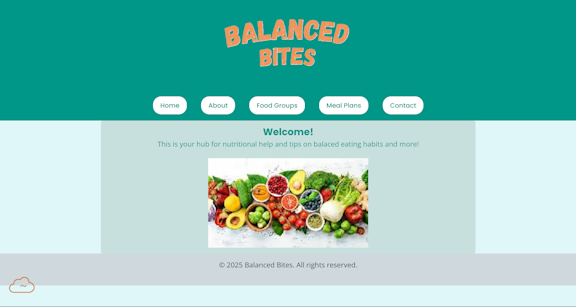

Peer Review 2
Anthony, Justin

Link to Website
-
Files and Links:
- Link from ITIS3135 page correctly routes
- All header links work
- Consistent and effective naming conventions
- GitHub isn't synced with CLT webpage
-
Design:
-
Contrast: WCAG says contrast between the main
container and text is hard to read
-
Repetition: Consistent style across the pages
-
Alignment: All elements on the page are
aligned nicely
-
Proximity: Good spacing between all elements
on each page
-
Page Elements:
- Page contains header, main, and footer
- Header has an h1/image element
-
Title should change when page changes (Ex: Balanced Bites -
Home)
-
Assignment Requirements:
- Has five functional pages
- A home page named index.html
- A working and consistent nav bar
- 4 other working pages with content for each
-
Notes:
-
There are 2 css warnings, change the universal selector and
perhaps change width with border to max-width with border
-
Consider moving the footer on the home page, it seems to be
higher than expected
-
Under each food group option, consider having the list
left-aligned instead of centered
-
Website is overall very well structured, it only needs a
little bit of CSS changes